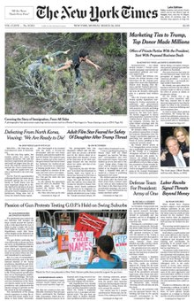
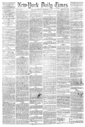
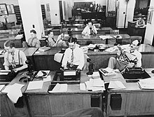

History
Origins
The New York Times was founded as the New-York Daily
Times on September 18, 1851.[a][20]
Founded by journalist and politician Henry Jarvis Raymond
and former banker George Jones, the Times was initially published by
Raymond, Jones & Company.[21][22] Early investors in the company
included
- Edwin B. Morgan,[23]
- Christopher Morgan,[24]
- Edward B. Wesley.[25]
Sold for a penny (equivalent to $0.35 in 2022), the
inaugural edition attempted to address various speculations on its
purpose and positions that preceded its release:[26]
Ochs Ownership
After George Jones died in 1891 , Charles Ransom Miller
and other New York Times editors
raised $1 million (equivalent to $33 million in 2022) to
buy the Times, printing it under the New York Times Publishing
Company.[35][36]
The newspaper found itself in a financial
crisis by the Panic of 1893,[34] and by 1896, the newspaper had a
circulation of less than 9,000 and was losing $1,000 a day. That year,
Adolph Ochs, the publisher of the Chattanooga Times, gained a
controlling interest in the company for $75,000.[37]
Digital era

Early digital content
The New York Times switched to a digital production process sometime
before 1980, but only began preserving the resulting digital text that
year.[61] In 1983, the Times sold the electronic rights to its
articles to LexisNexis.
As the online distribution of news
increased in the 1990s, the Times decided not to renew the deal and in
1994 the newspaper regained electronic rights to its articles.[62] On
January 22, 1996, NYTimes.com began publishing.[63]
2000s
In August 2007, the paper reduced the physical size of its print
edition, cutting the page width from 13.5 inches (34 cm) to a 12
inches (30 cm). This followed similar moves by a roster of other
newspapers in the previous ten years, including USA Today, The Wall
Street Journal, and The Washington Post. The move resulted in a 5%
reduction in news space, but (in an era of dwindling circulation and
significant advertising revenue losses) also saved about $12 million a
year.[64][65]
2010s
In December 2012, the Times published "Snow Fall", a six-part article
about the 2012 Tunnel Creek avalanche which integrated videos, photos,
and interactive graphics and was hailed as a watershed moment for
online journalism.[68][69] In 2013, "How Y’all, Youse and You Guys
Talk," an interactive quiz created by intern Josh Katz,[70] based on
the Harvard Dialect Survey, which collected responses of more than
50,000 people answering 122 questions about the way they said
different things across the United States[71] became the Times most
popular piece of content of the year.[70]
Organization

News staff
In addition to its New York City headquarters, the paper has newsrooms
in London and Hong Kong.[135][136] Its Paris newsroom, which had been
the headquarters of the paper's international edition, was closed in
2016, although the city remains home to a news bureau and an
advertising office.[137][138] The paper also has an editing and wire
service center in Gainesville, Florida.[139]
Ochs-Sulzberger family
In 1896, Adolph Ochs bought The New York Times, a money-losing
newspaper, and formed the New York Times Company. The Ochs-Sulzberger
family, one of the United States' newspaper dynasties, has owned The
New York Times ever since.[33] The publisher went public on January
14, 1969, trading at $42 a share on the American Stock Exchange.[146]
After this, the family continued to exert control through its
ownership of the vast majority of Class B voting shares. Class A
shareholders are permitted restrictive voting rights, while Class B
shareholders are allowed open voting rights.
Content
Editorial stance
The editorial pages of The New York Times are typically liberal in
their position.[151][152] In mid-2004, the newspaper's then public
editor (ombudsman), Daniel Okrent, wrote that "the Op-Ed page editors
do an evenhanded job of representing a range of views in the essays
from outsiders they publish – but you need an awfully heavy
counterweight to balance a page that also bears the work of seven
opinionated columnists, only two of whom could be classified as
conservative (and, even then, of the conservative subspecies that
supports legalization of gay unions and, in the case of William
Safire, opposes some central provisions of the Patriot Act)."[153]
Style
Unlike most U.S. daily newspapers, the Times relies on its own
in-house stylebook rather than The Associated Press Stylebook. When
referring to people, The New York Times generally uses honorifics
rather than unadorned last names (except in the sports pages, pop
culture coverage,[158] and the Book Review and Magazine).[159] The New
York Times printed a display advertisement on its first page on
January 6, 2009, breaking tradition at the paper.[160] The
advertisement, for CBS, was in color and ran the entire width of the
page.[161] The newspaper promised it would place first-page
advertisements on only the lower half of the page.[160]